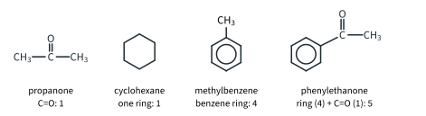
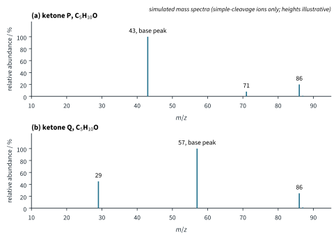
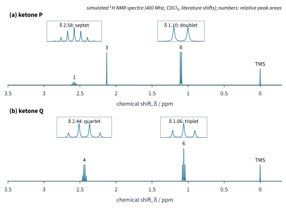
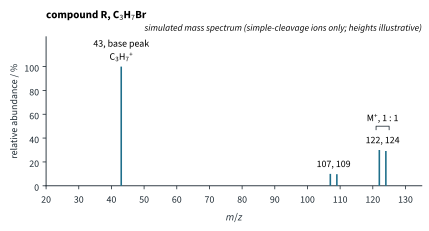
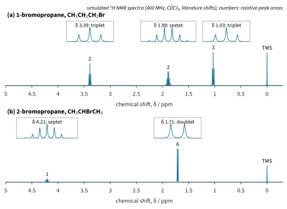
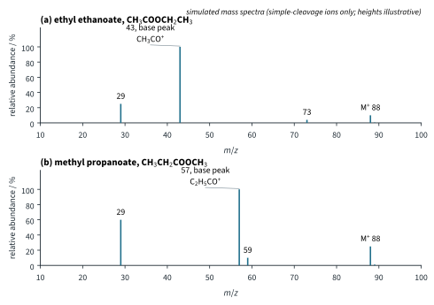
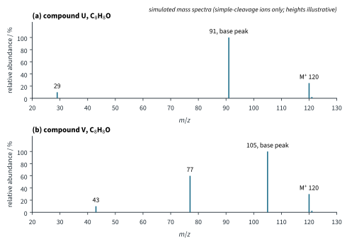
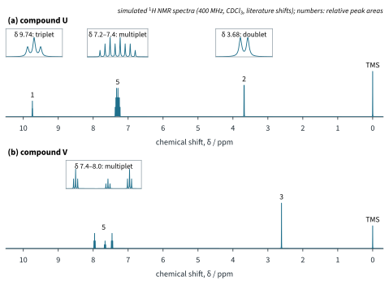
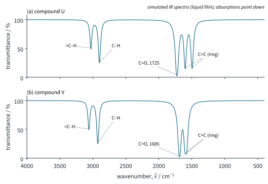

Mass Spectrometry and Structure Solving 2
Chapter H3.4 · Mass Spectrometry and Structure Solving Part 2
On this page
Introduction
You now have four techniques, and each one answers a different question about an unknown compound. On its own, each one usually leaves several possible structures; together they nearly always leave one. This Part puts them together.
| Technique | The question it answers | Where |
|---|---|---|
| Mass spectrometry | How heavy is the molecule (Mr)? Does it contain Cl or Br? About how many C atoms? Which pieces does it break into? | Part 1 |
| Infra-red spectroscopy | Which functional groups (bonds) are present: O–H, C=O, C–O, C≡N, arene C=C? | H3.2 Part 2 |
| 1H NMR spectroscopy | How many kinds of H, how many of each, what each is next to, how many H are on the neighbouring carbons? | H3.3 |
| UV/vis spectroscopy | Is there a conjugated system (a strong band above 200 nm)? | H3.2 Part 1 |
Two tools glue the techniques together: the molecular formula, which every answer must fit, and the degree of unsaturation, which the formula gives at once. We start with them.
Key terms
You will use these terms in this Part.
| Term | Meaning |
|---|---|
| Empirical formula | The simplest whole-number ratio of the atoms of each element in a compound (Topic 6 Part 1). |
| Molecular formula | The actual number of atoms of each element in one molecule: a whole-number multiple of the empirical formula. |
| Degree of unsaturation (double-bond equivalents) | The number of rings plus the number of π bonds in a molecule, worked out from its molecular formula. |
| Isomers (constitutional) | Compounds with the same molecular formula but different structures (11.1 Part 2). |
| Candidate structure | A structure that fits the formula and some of the data; it is accepted only when it fits every piece of data. |
Degree of unsaturation
A saturated, open-chain compound CaHb has the most hydrogen atoms possible: b = 2a + 2 (as in the alkanes). Every ring or π bond in the molecule removes two hydrogen atoms. So counting how many "pairs of H are missing" tells you the number of rings plus π bonds. This number is the degree of unsaturation, also called the number of double-bond equivalents. 9813 does not name it, but it is the quickest first step in any structure problem, and these notes use it throughout this Part.
Then count what the structure could contain:
- one C=C, C=O or ring: 1 each;
- one C≡C or C≡N: 2 (two π bonds);
- a benzene ring: 4 (three C=C and one ring). So a degree of unsaturation of 4 or more suggests a benzene ring. Fig 9 shows the counting for four molecules.
Worked example 1: what the formula allows
Calculate the degree of unsaturation of each formula and say what it allows: (a) C4H8O2; (b) C5H10O; (c) C3H7Br; (d) C8H8O; (e) C7H7Cl; (f) C8H10.
(To answer this, you have to put a, b, c and e into the formula, ignoring O, then turn the number into rings and π bonds.)
| Formula | Working | Degree | What it allows |
|---|---|---|---|
| (a) C4H8O2 | 4 − (8)/2 + 1 | 1 | one C=O (an ester or a carboxylic acid), or one C=C or ring |
| (b) C5H10O | 5 − (10)/2 + 1 | 1 | one C=O (aldehyde or ketone), or one C=C or ring |
| (c) C3H7Br | 3 − (7 + 1)/2 + 1 | 0 | no rings, no π bonds: a saturated chain |
| (d) C8H8O | 8 − (8)/2 + 1 | 5 | a benzene ring (4) plus one C=O or C=C |
| (e) C7H7Cl | 7 − (7 + 1)/2 + 1 | 4 | a benzene ring, nothing else unsaturated |
| (f) C8H10 | 8 − (10)/2 + 1 | 4 | a benzene ring (H3.3: ethylbenzene or a dimethylbenzene) |

A method for unknowns
This is H3.3's "Putting it together" method with mass spectrometry and the formula added. Work through it in order, and write down what each step tells you.
The last step is the one that earns the marks. A structure is accepted only when every piece of data fits it; one datum that does not fit rules it out, however well the rest agrees.
Finding the molecular formula
There are two routes to the molecular formula, and in a problem you often use both, one to check the other.
- From the mass spectrum: Mr from the molecular ion; Cl and Br from the M+2 and M+4 pattern; the number of C atoms from the M+1 peak (Part 1). Then fill in the rest of the mass with H and O (or N).
- From the composition by mass (Topic 6 Part 1): the empirical formula, then the Mr from the mass spectrum gives the multiple.
Worked example 2: from composition and the mass spectrum
A neutral compound X contains C 69.8 %, H 11.6 % and O 18.6 % by mass. Its mass spectrum has a molecular ion peak at m/z 86 (height 25.0) and an M+1 peak at m/z 87 (height 1.39). (a) Find the empirical formula. (b) Find the molecular formula, and check it with the M+1 peak. (c) Calculate its degree of unsaturation.
(To answer part (a), you have to divide each percentage by Ar, then by the smallest answer.)
| C | H | O | |
|---|---|---|---|
| mass in 100 g / g | 69.8 | 11.6 | 18.6 |
| amount / mol | 69.8 / 12.0 = 5.82 | 11.6 / 1.0 = 11.6 | 18.6 / 16.0 = 1.16 |
| divide by 1.16 | 5.02 | 10.0 | 1 |
| ratio | 5 | 10 | 1 |
Empirical formula C5H10O.
(To answer part (b), you have to compare the empirical formula mass with Mr.) C5H10O: 5 × 12.0 + 10 × 1.0 + 16.0 = 86.0, the same as the molecular ion (86), so the molecular formula is also C5H10O. Check with the M+1 peak:
n = (1.39 / 25.0) × 100 / 1.1 = 5.56 / 1.1 = 5.05, so 5 carbon atoms, which agrees
There is no M+2 peak, so no Cl or Br. (To answer part (c), you have to ignore the O.) Degree of unsaturation = 5 − (10)/2 + 1 = 1: one C=O, C=C or ring. Worked example 3 finds which.
Worked problems
Worked example 3: two ketones of formula C5H10O
Compound X of worked example 2 is one of two ketones, P and Q, both C5H10O. Both show a strong IR absorption at 1715 cm−1. Their simulated mass spectra are in Fig 10 and their 1H NMR spectra in Fig 11. (a) What does the IR band show? (b) Deduce the structures of P and Q from their NMR spectra. (c) Show that the mass spectra agree. (d) The 1H NMR spectrum of X has two signals, δ 2.44 (quartet, 4H) and 1.06 (triplet, 6H), and the base peak of its mass spectrum is at m/z 57. Identify X.


(To answer part (a), you have to use the booklet IR table.) 1715 cm−1 lies in the C=O range for aldehydes and ketones (1670–1740 cm−1): a C=O group, which uses up the degree of unsaturation of 1. So there is no ring and no C=C.
(To answer part (b), you have to count the H in each signal and use the splitting, H3.3.)
- P: three signals, 1 : 3 : 6 (10 H). The singlet at δ 2.13 (3H) is a CH3 next to the C=O with no neighbouring H: CH3CO–. A doublet of 6H at 1.10 and a septet of 1H at 2.58 are the isopropyl pattern, (CH3)2CH–, the CH next to the C=O. P is CH3COCH(CH3)2, 3-methylbutan-2-one.
- Q: two signals, 4 : 6. A quartet (4H) at 2.44 and a triplet (6H) at 1.06 are the ethyl pattern, twice: two identical CH3CH2– groups, each CH2 next to the C=O (CH3–C=O range 2.2–3.0). Q is CH3CH2COCH2CH3, pentan-3-one.
(To answer part (c), you have to break the bonds next to the C=O.)
- P: losing the larger radical, C3H7• (43), gives CH3CO+ at 43 (86 − 43), the base peak; losing CH3• gives (CH3)2CHCO+ at 71 (86 − 15), small. (The same break with the charge on the other side gives C3H7+, also at 43, adding to the base peak.)
- Q: both sides are ethyl, so losing C2H5• gives C2H5CO+ at 57 (86 − 29), the base peak, and C2H5+ at 29 (86 − 57). There is no peak at 71 or 43: Q has no CH3 next to the C=O.
(To answer part (d), you have to match X's data with P and Q.) Two signals, quartet 4H and triplet 6H, and a base peak at 57 are the data of Q, not P (three signals, base peak 43): X is pentan-3-one. Note what rules out the other C5H10O compounds: the aldehydes (such as pentanal) would show an NMR signal at δ 9.3–10.5, which X does not have; pentan-2-one, CH3COCH2CH2CH3, would show four NMR signals and a base peak at 43.
Worked example 4: when the mass spectrum cannot decide
Compound R gives the simulated mass spectrum in Fig 12. (a) Show that R is C3H7Br and calculate its degree of unsaturation. (b) Give the two possible structures and explain why the mass spectrum cannot easily tell them apart. (c) R's 1H NMR spectrum has two signals: δ 4.21 (septet, 1H) and 1.71 (doublet, 6H). Identify R, using Fig 13.

(To answer part (a), you have to read the cluster pattern, then subtract.) The peaks at 122 and 124 (1 : 1) are a molecular ion with one Br. 122 − 79 = 43 is left for the rest, which is C3H7 (3 × 12 + 7 = 43): R is C3H7Br. Degree of unsaturation = 3 − (7 + 1)/2 + 1 = 0: a saturated chain. The base peak at 43 (a single peak, no Br) is C3H7+, formed by losing Br• (122 − 79 = 43).
(To answer part (b), you have to see that both isomers lose Br• to give a C3H7+ ion.) The isomers are 1-bromopropane, CH3CH2CH2Br, and 2-bromopropane, CH3CHBrCH3. Both have the same M (122, 124, 1 : 1), and both lose Br• to give C3H7+ at 43, the base peak. Both also lose CH3• to give a small pair at 107 and 109 (C2H4Br+: CH3CHBr+ from 2-bromopropane, CH2CH2Br+ from 1-bromopropane); 1-bromopropane also shows a small C2H5+ peak at 29. The two mass spectra are almost the same, and small differences in minor peaks are not a safe basis for a decision.

(To answer part (c), you have to count the signals and use the splitting.) 1-Bromopropane has three sets of H, so three signals (Fig 13(a)): CH2Br, a triplet at 3.39; the middle CH2, a sextet at 1.89 (five neighbours); CH3, a triplet at 1.03. 2-Bromopropane has two sets (Fig 13(b)): the CH next to Br, split by six neighbours into a septet (4.21, 1H), and two equivalent CH3 groups split by one neighbour into a doublet (1.71, 6H). R is 2-bromopropane. This is the lesson of the example: when isomers give the same fragments, NMR decides.
Worked example 5: two esters of formula C4H8O2
H3.3 Part 2, worked example 6, used 1H NMR to tell ethyl ethanoate, CH3COOCH2CH3, from methyl propanoate, CH3CH2COOCH3 (H3.3 Fig 19). Their IR spectra are almost the same: both show C=O near 1740 cm−1 and C–O bands (booklet ranges 1710–1750 and 1050–1330). Show that their simulated mass spectra (Fig 14) tell them apart as well, and explain how.

(To answer this, you have to break the bonds on either side of the C=O and see which acyl group each ester has.) Both show M+ at 88. The key is the acylium ion, which carries the C=O and whatever is on the carbon side of it:
| Ethyl ethanoate, CH3CO–OCH2CH3 | Methyl propanoate, CH3CH2CO–OCH3 | |
|---|---|---|
| acylium ion (base peak) | CH3CO+, 43 (88 − 45: OC2H5• lost) | C2H5CO+, 57 (88 − 31: OCH3• lost) |
| other ions | 73 (88 − 15: CH3• lost from the ethyl group); C2H5+, 29 (88 − 59: CH3COO• lost) | COOCH3+, 59 (88 − 29: C2H5• lost); C2H5+, 29 (88 − 59: COOCH3• lost) |
A base peak at 43 says CH3CO– is on the carbon side of the C=O; at 57, C2H5CO–. The mass spectrum shows which side of the ester oxygen each piece is on, the same conclusion the NMR reached from the δ of the O–CH2 and O–CH3 signals. (Neither spectrum shows the alkoxy piece as an ion, CH3CH2O+ or CH3O+: these are not stable ions.) Part 1 predicted the ethyl ethanoate peaks (88, 43, 29): the prediction fits.
Worked example 6: two isomers of formula C8H8O
Compounds U and V are phenylethanone, C6H5COCH3, and phenylethanal, C6H5CH2CHO, but the labels have been lost. Use their mass spectra (Fig 15), 1H NMR spectra (Fig 16), IR spectra (Fig 17) and the UV data in the table to decide which is which. Explain how each technique supports your answer.



| λmax / nm | εmax / dm3 mol−1 cm−1 | |
|---|---|---|
| U | about 258 | about 250 (weak) |
| V | about 241 | about 1.3 × 104 (strong) |
UV data in ethanol (literature values).
(To answer this, you have to start with the formula, then let each technique say what it sees.) Both are C8H8O: degree of unsaturation 8 − (8)/2 + 1 = 5, a benzene ring and one C=O.
- Mass spectra: U has its base peak at 91, the benzyl cation C6H5CH2+ (120 − 29, CHO• lost), and a peak at 29 (CHO+): a C6H5CH2– group next to CHO. V has its base peak at 105, the benzoyl ion C6H5CO+ (120 − 15, CH3• lost), with 77 (C6H5+, 120 − 43) and 43 (CH3CO+): a C6H5–C=O group.
- 1H NMR: U shows an aldehyde H at δ 9.74 (booklet 9.3–10.5), a triplet split by the CH2; a doublet of 2H at 3.68 (the CH2, split by the CHO hydrogen; between the ring and the C=O, so pushed above both of their ranges, as H3.3 explained for two influences); and the ring, 5H. V shows a singlet of 3H at δ 2.61 (CH3–C=O, 2.2–3.0: no neighbouring H) and the ring, 5H, spread from 7.4 to 8.0.2
- IR: both have C=O (1670–1740), arene =C–H (3000–3100) and ring C=C (1475–1625). V's C=O is at 1685 cm−1, lower than U's 1725 cm−1: in V the C=O is conjugated with the ring, which weakens it slightly (H3.2). Both are inside the booklet range, so IR alone is only a hint.
- UV/vis: V has a strong band at 241 nm: the C=O is conjugated with the ring, a larger chromophore (H3.2 Part 1). U has only the weak ring band near 258 nm, like benzene's band at 255 nm: its C=O is cut off from the ring by the CH2 group.
So U is phenylethanal and V is phenylethanone. Every technique agrees. (A third isomer, 4-methylbenzaldehyde, H3.3 Part 2, is ruled out for both: it would show a CHO singlet near δ 10 and two ring doublets.)
Worked example 7: predicting all the data for a structure
9813 also asks you to work the other way. Predict the main features of the mass, 1H NMR, IR and UV/vis spectra of (chloromethyl)benzene, C6H5CH2Cl.
(To answer this, you have to start from the formula, then go through the techniques one by one, giving a reason for each prediction.) Formula C7H7Cl: M = 7 × 12 + 7 × 1 + 35 = 126; degree of unsaturation = 7 − (7 + 1)/2 + 1 = 4, the benzene ring.
| Technique | Prediction | Reason |
|---|---|---|
| Mass spectrum | M+ at 126 and 128, 3 : 1; base peak at 91, a single peak | one Cl; losing Cl• (126 − 35 = 91) gives the benzyl cation, which has no Cl left |
| 1H NMR | two signals: 7.3–7.4 (multiplet, 5H) and 4.57 (singlet, 2H) | C6H5– ring; the CH2 has no neighbouring H, and it is next to both Cl and the ring, so it lies above both booklet ranges (3.2–4.0 and 2.3–3.0) (literature values) |
| IR | =C–H 3000–3100; ring C=C 1475–1625; no C=O, no O–H | arene; a band near 700 cm−1 lies in the C–Cl range (700–800) but is in the fingerprint region, so it is not proof of C–Cl |
| UV/vis | only weak bands near 260 nm | the ring is the only chromophore (as in benzene); no conjugated C=O |
Summary
The method in short:
Some clues come up again and again:
| Clue | Usually means |
|---|---|
| Degree of unsaturation 4 or more | a benzene ring |
| Peaks two units apart, 3 : 1 or 1 : 1 | Cl or Br (Part 1 table for two atoms) |
| Base peak 43 / 57 in a ketone or ester | CH3CO– / C2H5CO– next to the C=O |
| Peak at 91 / 105 and 77 | C6H5CH2– / C6H5CO– and C6H5– |
| Isomers with the same fragments | NMR decides (splitting and integration) |
| Strong UV band above 200 nm | a conjugated system, such as C=O on a ring |
LC-MS in full, 13C NMR and two-dimensional NMR, which take structure solving further, belong to the analytical tier.
Additional information
- Further example: because each N adds ½, a compound with one N (or any odd number of N atoms) has an odd number of H plus halogen atoms, and an odd Mr; methylamine, CH3NH2, has Mr 31. A molecular ion at an odd m/z is a hint that the compound contains nitrogen. ↩
- In phenylethanone (and in other compounds with a C=O group on the ring) the C=O group spreads the ring signals over about δ 7.4 to 8.0: the two H next to the C=O are at the left. In this chapter the ring is still read as one 5H multiplet. ↩